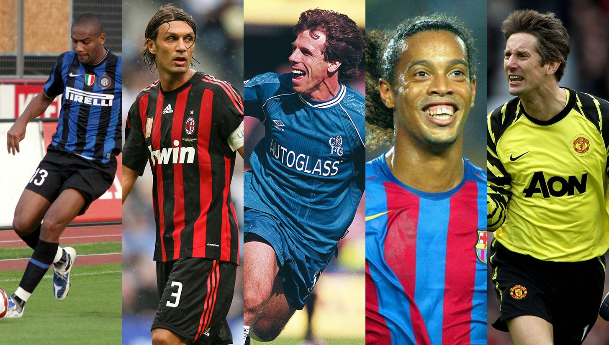

Conmebol
Copa America
2021
Watch Live


Naymer Jr.
Neymar da Silva Santos Júnior, known as Neymar, is a Brazilian professional footballer who plays as a forward for the Brazil national team

Leo Messi
Lionel Andrés Messi is an Argentine professional footballer who plays as a attacking midfielder and captains the Argentina national team.

CR7
Cristiano Ronaldo dos Santos Aveiro is a Portuguese professional footballer who plays as a forward for the Portugal national team.

Dibala
Dibala known as Dibala, is a Brazilian professional footballer who plays as a forward forthe Argentina national team

Mesut Ozil
Mesut Ozil known as Ozil, is a Brazilian professional footballer who plays as a forward for national team

Mauro Icardi
Mauro Icardi , known as Icardi, is a Italian professional footballer who plays

Di Maria
DI MAria known as Di Maria, is a Argentainian professional footballer who plays as a forward for Ligue 1 club Paris Saint-Germain.

Mbappe
Mbappe known as Mbappe, is a France professional footballer who plays as a forward for Ligue 1 club Paris Saint-Germain.

Mohammad Salah
Mohammad Salah known as Salah, is a Misorian professional footballer who plays as a forward for Ligue 1 club Liverpool.

Hery Keyn
Hery Kane known Herry kane, is a England professional footballer who plays as a forward for the England national team

Kevin De Bruyne
Kevin De Bruyne known as is a Brazilian professional footballer who plays as a forward for the Bayern Munich clab

Philippe Coutinho
Philippe Coutinho, known as Coutinho, is a Brazilian professional footballer who plays as a forward for the Brazil national team.png)
CUP NOTES
I was a winning coach from a very young age. At 37 I was champion of my country and champion of America. At 38 I was a world champion.
.png)
PHRASES TO REMEMBER
The 1980 Nacional was one of the best teams in the club's history. It was a complete picture in every way. Waldemar Victorino.

THE IMAGES THAT BUILT THE GREATNESS OF SOUTH AMERICA
The Cup returned to the Uruguayan “Bag”. The eleven champions: Rodolfo Rodríguez, JC Blanco, Víctor Espárrago, Washington González, José Moreira and Hugo de León; Alberto Bica, Eduardo de la Peña, Waldemar Victorino, Arsenio Luzardo and Julio César Morales.